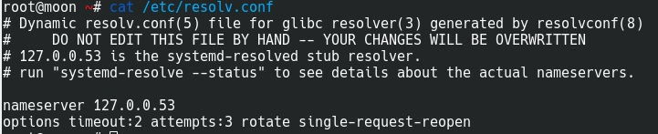
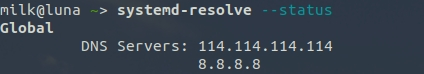

Ubuntu18.04网络相关
写在前面
一些网络相关的操作。
拨号上网
同 Windows 下的拨号上网
解决校园网上网问题
主要使用 pppoeconf — configures a PPPoE (ADSL) connection
参考
开始
- 开启配置
$ sudo pppoeconf经历步骤：
- 输入用户名
- 输入密码
- 一路‘yes’
- 联网
$ sudo pon dsl-provider- 断网
$ sudo poff命令行连接Wifi
使用工具: nmcli，命令行网络管理工具
安装 nmcli: sudo apt install network-manager
开启 WiFi
nmcli radio wifi on关闭 WiFi
nmcli radio wifi off扫描 WiFi
nmcli device wifi list重新扫描 WiFi
nmcli device wifi rescan连接 WiFi
nmcli device wifi connect "WiFi名" password "WiFi密码"更多
更多 nmcli 用法可以使用man nmcli
更多 nmcli wifi 的操作可以使用nmcli device wifi help
18.04版本修改DNS
修改文件/etc/systemd/resolved.conf。
找对修改文件
在 CentOS 下，修改 DNS 可以通过修改/etc/resolv.conf(或直接编辑网卡)，在 Ubuntu18.04 上也有/etc/resolve.conf，但是注释却提醒不能在此处修改，计算机重启后修改将会被重置。

查看/etc/systemd/resolved.conf文件可以看到有DNS=且没有特殊说明。
DNS=114.114.114.114
# 多个DNS直接添加DNS即可
# DNS=8.8.8.8重启服务以更新修改
sudo systemctl restart systemd-resolved.service查看修改是否成功
systemed-resolve --status
comment:
- Valine
- LiveRe
- ChangYan